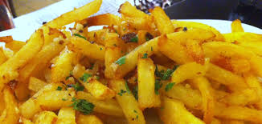

Patatas fritas
Receta de papas fritas caseras.

Ingredientes
- 3 ó 4 papas (300g.)
- 4 dientes de ajo
- Aceite de oliva
- Sal
- Opcional: perejil
Elaboración (Pasos)
- Calentar aceite en una sartén.
- Añadir las papas cortadas, la sal y los ajos.
- Freír al gusto.
- Servir en plato, agregar perejil